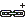

Pop-up menu of the document¶
Once you have received a result list from a search (see CONTACT Elements client reference), you can edit the documents in the result list via their pop-up menu. Select a document data record in the result list and open the corresponding pop-up menu by pressing the right mouse button.
The pop-up menu contains both general functions (explained in the CONTACT Elements client reference) and special document functions and - if configured - commands for calling up the relationships of documents to other objects.
Note
Refer to the CONTACT Elements client reference for an explanation of the symbols in the pop-up menu.
 New…
New…- Standard function, see CONTACT Elements client reference.
 Create from Template …
Create from Template …- Create a document from a template, see Create from Template.
- Search…
- Standard function, see CONTACT Elements client reference.
- Search again…
- Standard function, see CONTACT Elements client reference.
- Sorting
- Standard function, see CONTACT Elements client reference.
- View
- Display the document, see View.
- Edit
- Edit the document, see Edit.
- Modify…
- Standard function, see CONTACT Elements client reference.
- Information
- Standard function, see CONTACT Elements client reference.
- Copy…
- Standard function, see CONTACT Elements client reference.
- Delete…
- Standard function, see CONTACT Elements client reference.
- Generate index
- Create a new index for the document, see Generating an index.
- Change status
- Standard function, see CONTACT Elements client reference.
- Lock
- Lock the document, see Lock.
- Unlock
- Unlock the document, see Unlock.
- Import
- Import a document into the system, see Import.
- Export
- Export a document from the system, see Export.
- Distribute
- Standard function, see CONTACT Elements client reference.
- Create Sending Order
- Create a transmit operation, see Create Sending Order.
- Mark for loading
- Mark the document for loading, see Mark for loading.
- Add query to favorites
- Standard function, see CONTACT Elements client reference.
- Add object to favorites
- Standard function, see CONTACT Elements client reference.
- Create checklist from template
- Create a checklist from a template for the document, see User manual for project management.
- Checklists
- Display checklists for a document, see User manual for project management.
- Project
- Pop-up menu for the project assigned to the document. If a project is assigned to the document, you can run functions on the project, see User manual for project management.
- Assigned Part
- Pop-up menu for the part assigned to the document. If a part is assigned to the document, you can run functions on the part, see User manual for product data.
- Active Issues
- Shows the active issues assigned to the document, see User manual for project management.
- Status log
- All of the status changes to date for a part are documented in the status log and showed in a separate dialog in the form of a list.
- Batch operations
- Display the processes for batch operations assigned to the document.
- Batch Operation New …
- Create a new batch operation assigned to the document.
- Search entries
- Search for entries in the result list, see CONTACT Elements client reference.